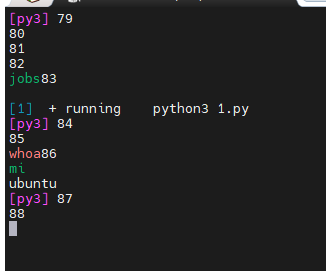
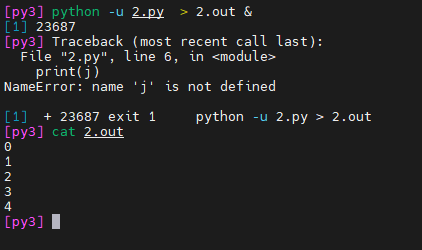
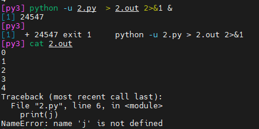
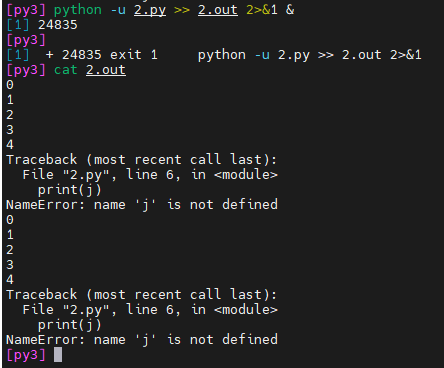

linux 下重定向的注意事项

1
重定向输出通常使用>和>>
>覆盖>>追加
2
在linux的重定向中: 0 1 2代表着不同的涵义。
0表示标准输入。
1标准输出。
2标准错误信息输出。
通过指明0/1/2来指定需要重定向内容是标准输入/标准输出/标准错误信息输出。默认重定向的内容是1（标准输出）。
3
某些快捷键
ctrl + z
可以将一个正在前台执行的命令放到后台，并且处于暂停状态。Ctrl+c
终止前台命令。
4
& 和 nohup
&
在命令后面加上& 实现后台运行，把当前控制台关掉(退出帐户时)，作业就会停止运行。
nohup
( no hang up) 在命令前加上nohup实现后台运行，退出帐户之后继续运行相应的进程，非正常退出会导致结束，需要使用exit
jobs
可以查看当前在后台的进程，配合使用kill %num 可以中止选择的进程
5 实例python代码
1.py
1 | import time |
普通的挂在后台
- python 1.py &
虽然这时候可以自己输入命令，但是该进程的输出会一直跑出来

所以需要把输出重定向到文件中。但是如果👇这样子写的话，在程序跑完前，在1.out输出文件中是不会有任何东西的
- python 1.py > 1.out &
所以需要加上 -u 参数
- python -u 1.py > 1.out &
这样子就可以进程的输出就会实时更新在1.out文件里了
2.py
然后来看第二个例子
1 | import time |
我在代码里留了一个报错，使用之前的命令
- python -u 2.py > 2.out &
可以看到程序在运行几秒后就报错了

如果想把报错信息也重定向到文件中，就需要这样子写命令
python -u 2.py > 2.out 2>&1 &
2>&1，意思时将标准错误重定向至标准输出

- python -u 2.py >> 2.out 2>&1 &
如果使用>>就会追加新的输出到文件中

评论
评论插件加载失败
正在加载评论插件